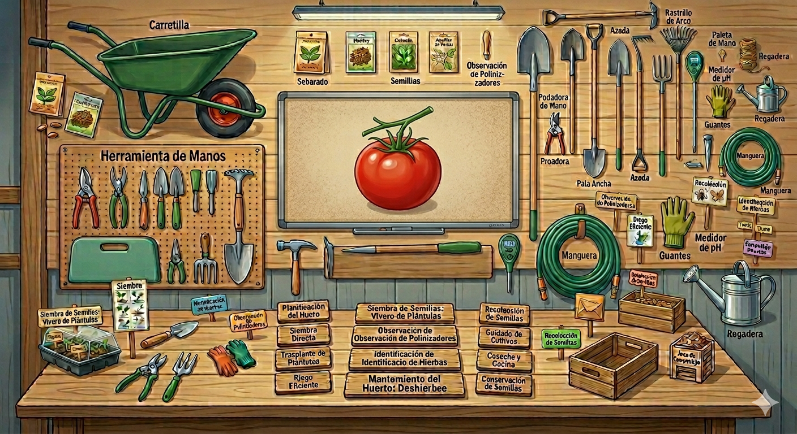

Hoja de ruta

Imagen generada con Gemini Nano Banana. Uso educativo.
La línea temporal es la guía que presenta de forma sencilla y organizada las actividades que trabajaremos en el proyecto.
Aquí tienes un ejemplo de lo que haremos:
https://www.youtube.com/watch?v=KV7n7tues7Y&t=223s
Las actividades han sido diseñadas como pasos progresivos que permitan al alumnado avanzar en el razonamiento y finalizar en la comunicación de los resultados obtenidos.
https://view.genially.com/69d522542fef1abdc2251674